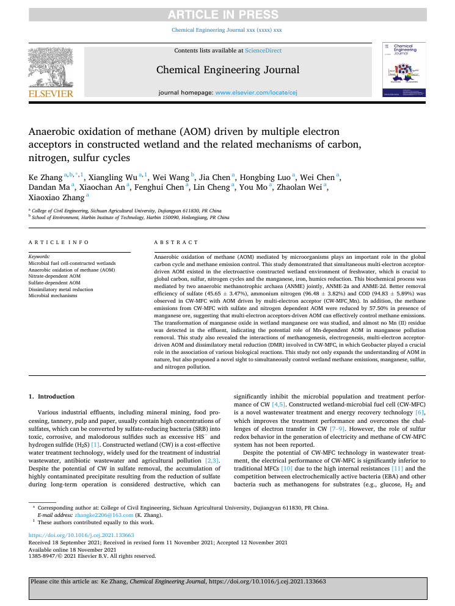
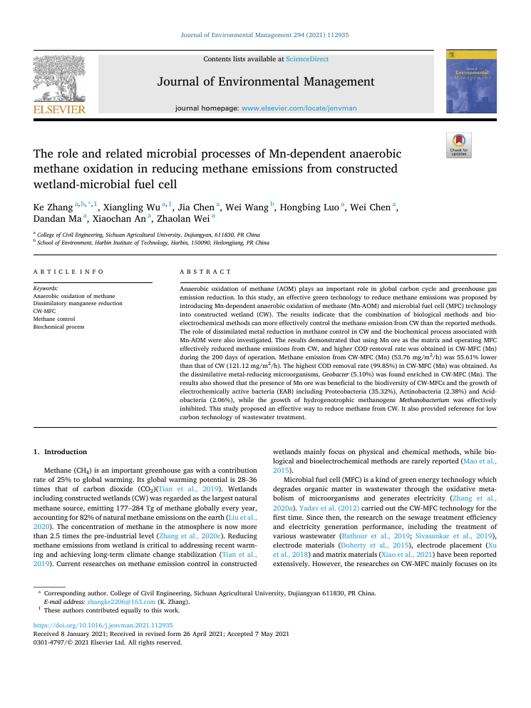
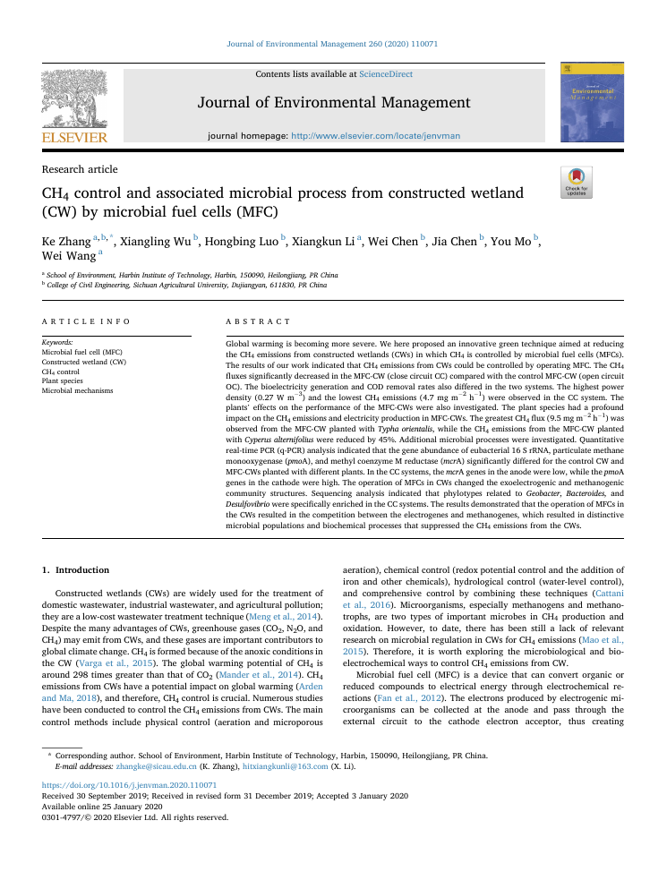
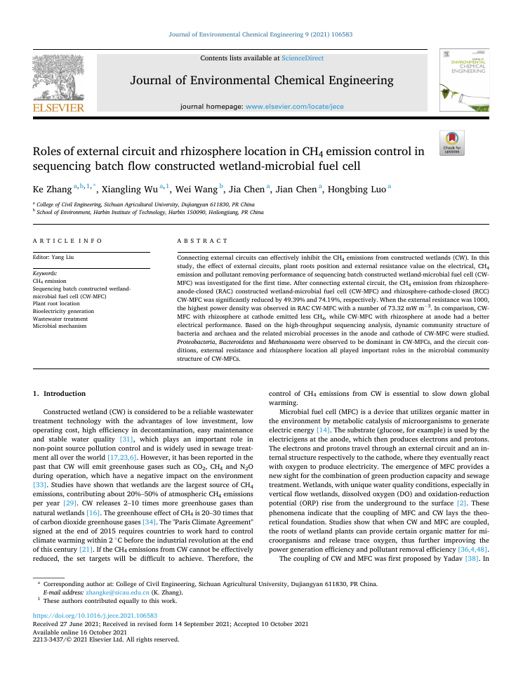
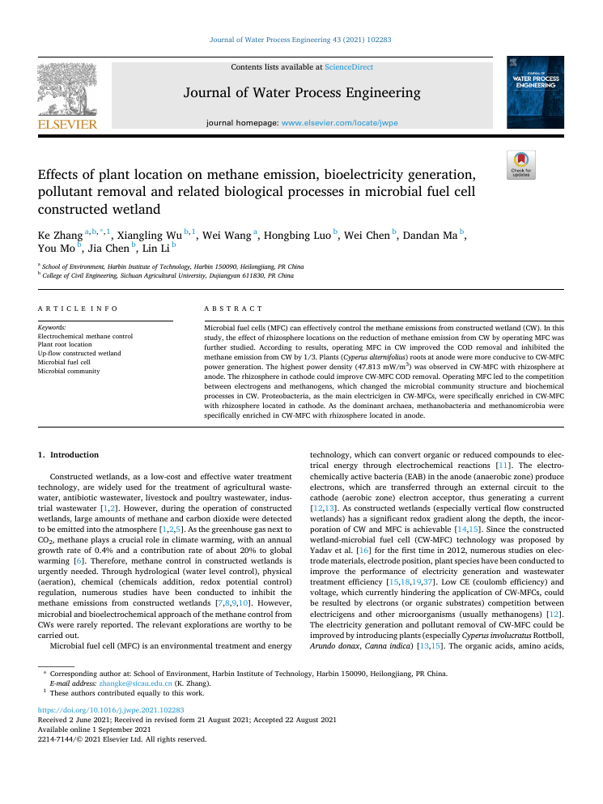
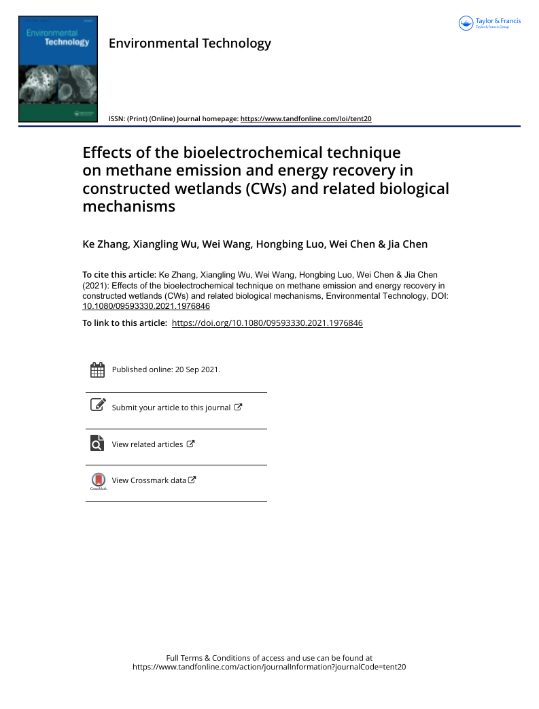
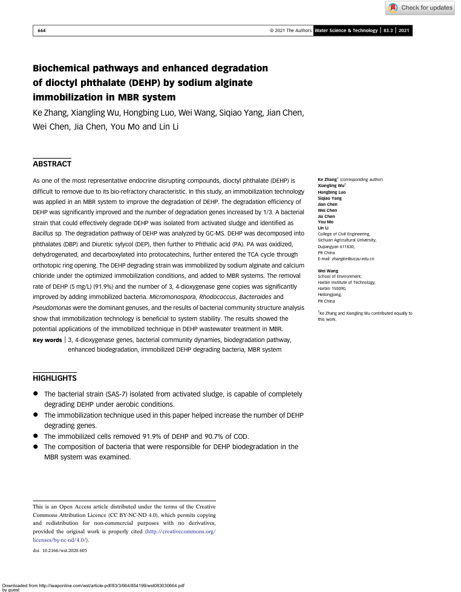
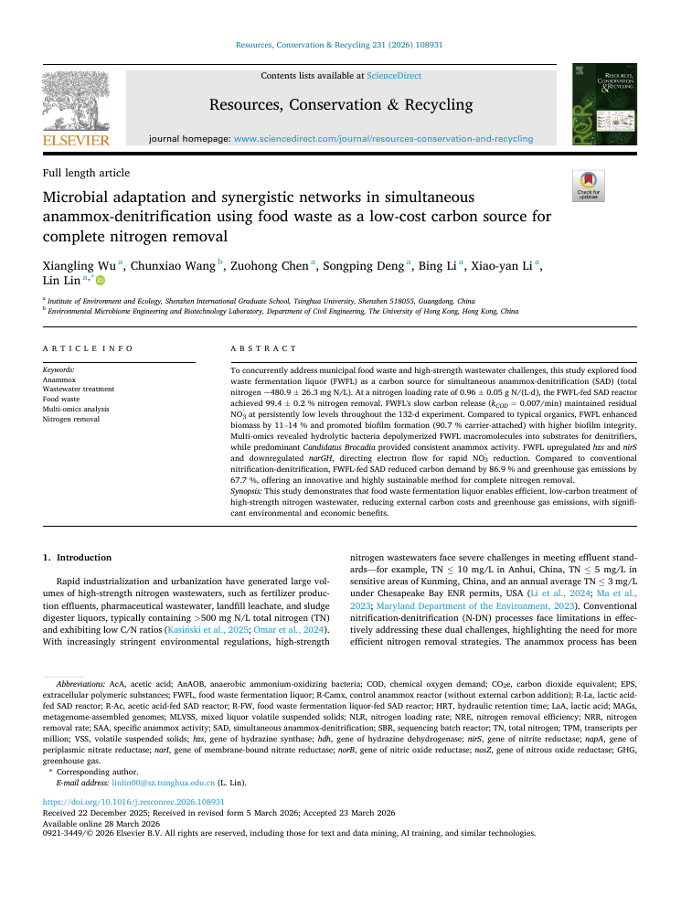
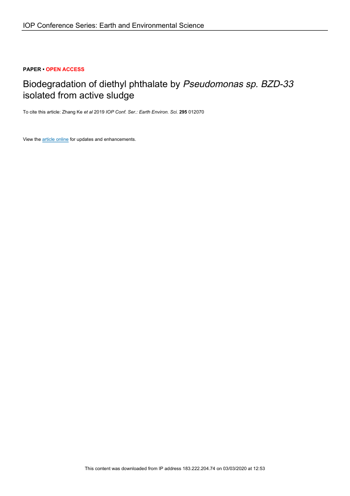
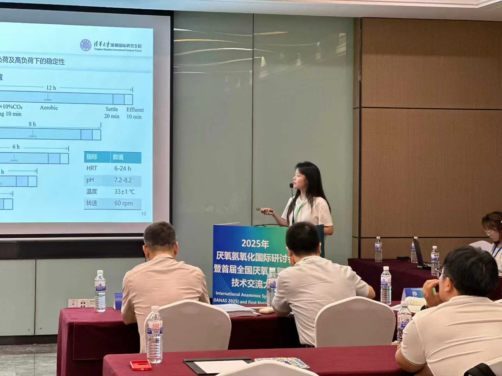

01MICROBIAL FUNCTION
● 微生物功能开发
从功能菌筛选到稳定生物强化
以难降解邻苯二甲酸酯为模型，建立从菌株发现、条件优化、代谢路径解析到 MBR 固定化强化的完整生物技术链。
功能菌筛选梯度驯化代谢路径固定化包埋
查看研究逻辑 ↗
三个方向平行展开，不按学历或时间排序。每项研究均沿“研究必要性—技术选择—路线优势—具体工作—证据验证—结果价值”展开。
以难降解邻苯二甲酸酯为模型，建立从菌株发现、条件优化、代谢路径解析到 MBR 固定化强化的完整生物技术链。
将 MFC 嵌入人工湿地，用产电菌与产甲烷菌的底物竞争抑制甲烷，并通过根区、电路、外阻和锰矿优化性能与机制。
将食物垃圾发酵液转化为缓释碳源，设计同步厌氧氨氧化—反硝化系统，实现高浓度含氮废水的近完全脱氮。
切换三个方向，查看每项研究的逻辑、我的工作、量化结果、关键论文与论文原始图表。点击图表可完整放大。
核心命题：怎样把环境样本中的微生物功能，转化为稳定、可复用的生物工艺能力？
以难降解邻苯二甲酸酯为模型，建立从菌株发现、条件优化、代谢路径解析到 MBR 固定化强化的完整生物技术链。
邻苯二甲酸酯难降解、环境残留风险高；仅证明“某株菌能降解”还不够，真正的难点是让功能在复杂污水与长期运行中保持稳定。
微生物可通过代谢将污染物逐步转化并矿化；从真实环境筛选并驯化功能菌，能够获得对目标底物更具适应性的生物催化单元。
“筛选—驯化—固定化”可同时优化专一性、环境适应性和反应器内的生物量保持；代谢路径分析又能解释性能来源。
分离并梯度驯化 BZD-33 与 SAS-7，确定浓度、温度和 pH 窗口；解析降解中间体与路径；优化海藻酸钠—氯化钙包埋并接入 MBR。
用高浓度降解实验、GC-MS/HPLC 路径证据、固定化参数对照和三组并行 MBR 运行，分别验证菌株能力、作用机制与工艺稳定性。
实现从功能菌发现到反应器强化的闭环：既获得高效降解结果，也形成可复用的菌株开发、过程优化与系统验证方法。
研究构思、菌株筛选与驯化、实验方案、固定化条件优化、反应器运行、GC-MS/HPLC 与分子生物学分析、数据解释及论文写作。
DEP 100–400 mg/L · DEHP 5 mg/L · 4–5 mm 固定化微球 · 三组并行 MBR · 最高去除约 91.9%。
可迁移到生物合成底盘筛选、微生物菌剂开发与生物强化系统评价。
GC-MS 证据支持 DEHP 经 DBP、DEP、MBP、邻苯二甲酸和原儿茶酸等中间步骤矿化，为菌株功能与工艺效果建立机制连接。
核心命题：能否通过重新分配湿地中的电子流，在净化污水的同时抑制甲烷？
将 MFC 嵌入人工湿地，用产电菌与产甲烷菌的底物竞争抑制甲烷，并通过植物根区、电路、外阻和锰矿进一步优化性能与机制。
人工湿地具有低能耗、自然处理优势，但厌氧区会产生甲烷；如果只看出水指标，就可能忽略处理过程带来的碳排放。
MFC 可让产电菌经外电路导出电子，与产甲烷菌竞争有机底物；嵌入湿地后可直接干预甲烷形成所依赖的电子与底物流向。
同一装置可耦合净化、产电和减排；电压、外阻、植物根区和反应性填料又提供了可监测、可调节的工程变量。
完成 CW-MFC 反应器、开闭路对照与运行参数设计；逐一比较植物种类、根区位置、外阻和锰矿基质，建立多目标配置关系。
以长期运行、电化学曲线、气体与水质监测为性能证据，再用功能基因、群落结构和锰依赖/多电子受体 AOM 解释电子竞争与多元素循环。
证明 CW-MFC 可协同污水净化、产电与甲烷控制，识别根区—电路—外阻—锰介质的设计规律，并提出多电子受体 AOM 机制。
研究构思、CW-MFC 反应器设计、对照体系与运行参数设计、长期实验、甲烷与水质监测、电化学分析、微生物机制解析、项目协调及论文写作。
反应器 Ø16 × 47 cm · 连续运行 200 d · 甲烷最高降低约 74% · COD 最高 99.85% · 外阻优化至 1000 Ω。
把甲烷减排从结果现象转化为可解释、可配置、可通过装置与参数优化的生物电化学问题。
系统集成气体采样、香附子、阴极、数据采集、外阻、锰矿/沸石基质、阳极、微生物采样、蠕动泵和进出水单元，并设置 CW、CW-MFC(Mn) 与 CW-MFC 对照。
长期电压、极化曲线、内阻与库仑效率共同证明系统具有稳定电子输出，并揭示锰矿带来的电子分配权衡。
产电菌、金属还原菌、反硝化菌、Anammox 与 ANME-2a/ANME-2d 共存，基因—通路映射连接群落与电子流。
宏基因组重建显示 SAD、NC-10、SRB 与 ANME-2d 通过硝酸盐、硫酸盐、Mn(IV) 和甲烷代谢相互连接。
核心命题：能否把食物垃圾中的有机碳，转化为高氮废水低碳脱氮所需的资源？
将食物垃圾发酵液转化为缓释碳源，设计同步厌氧氨氧化—反硝化系统，实现高浓度含氮废水的近完全脱氮。
高浓度含氮废水依赖曝气和商品碳源，能耗与药剂成本高；与此同时，食物垃圾富含有机物，却仍需额外处置。
Anammox 具有低曝气、低污泥和低碳源需求优势，反硝化可进一步去除硝酸盐；食物垃圾发酵液恰好连接两条路径。
FWFL 的复杂组分和缓慢释碳可形成动力学缓冲，避免瞬时有机负荷抑制 Anammox；单反应器耦合兼顾资源化与完全脱氮。
设计四组 2 L SBR 与分阶段 HRT/负荷条件，比较不同碳源；完成 132 天运行、动力学与生物膜分析，并组织宏基因组—转录组联合解析。
用长期性能与氮负荷验证工程稳定性，用周期动力学和 EPS/生物膜解释优势，再以基因表达、共现网络和 MAG 重建确认微生物分工。
实现高负荷条件下的近完全脱氮，同时量化外加碳需求和温室气体下降潜力，形成固废碳源—协同菌群—低碳脱氮的工程路线。
研究构思、反应器与运行阶段设计、实验实施、性能与动力学分析、多组学数据解释、可视化、项目组织及论文撰写。
四组 2 L SBR · 连续运行 132 d · TN 约 480.9 mg N/L · NLR 0.96 g N/(L·d) · TN 去除 99.4%。
把固废处置与污水脱氮两个成本中心连接成资源循环，并给出放大所需的负荷、稳定性和微生物机制依据。
不同碳源反应器在连续阶段中比较 TN、硝酸盐和 Anammox/反硝化贡献，FWFL 体系在高负荷下保持低硝酸盐与高去除。
周期曲线与拟合表明 FWFL 的 COD 利用更平缓，避免易降解纯碳源造成的瞬时有机过载和 Anammox 抑制。
载体生物膜、凝胶层和悬浮污泥的 EPS 组成及荧光成像显示 FWFL 促进更完整的附着生态位。
群落组成、功能菌比例与共现网络显示 Candidatus Brocadia、Thauera、Azoarcus 及水解类群形成底物分工。
氮还原、反硝化与 Anammox 基因的表达分配表明 hzs、nirS 等关键步骤被强化，而硝酸盐积累路径受到约束。
代表性 MAG 的系统发育、丰度、表达热图和氮代谢模块揭示核心菌群的代谢潜能与活跃功能。
Anammox、反硝化、异化和同化硝酸盐还原的类群贡献与基因丰度共同解释近完全脱氮的来源。
八项项目把论文中的研究能力延伸到国家与地方科研任务、校企合作及工程场景，覆盖资源化、生物材料、双碳、水处理与养殖废水。
我的主要角色集中在：研究构思、核心技术研发、实验与反应器设计、项目统筹、数据整合及成果转化。
深圳市科技创新委员会 · 项目统筹与核心技术研发
中华人民共和国科学技术部 · 核心技术研发
国家自然科学基金委员会 · 项目统筹与核心技术研发
项目清单记录 · 核心技术研发与整合
深圳市科技创新委员会 · 核心技术研发与整合
深圳同尘生物科技有限公司 · 项目统筹与核心技术研发
国家自然科学基金委员会 · 50 万元 · 核心技术研发
四川省自然科学基金 · 20 万元 · 核心技术研发
本区作为学术档案入口，不重复前面的研究叙事。每篇论文展示关键指标、研究摘要、个人贡献、产业意义与原文入口。

证明电活性人工湿地中存在 ANME-2a 与 ANME-2d 共同介导的多电子受体 AOM，并将甲烷转化与碳、氮、硫、锰、铁及腐殖质还原联系起来。
个人贡献：共同第一作者；完成核心实验、数据分析、机制整合和论文写作。
产业意义：为低碳湿地、多污染物协同治理及金属介导甲烷控制提供理论基础。

以锰矿为湿地基质并耦合 MFC，验证 Mn-AOM、异化金属还原和产电过程共同抑制甲烷。
个人贡献：共同第一作者；数据整理、原始稿撰写，并承担主要实验与分析。
产业意义：将常规填料升级为反应性电子受体，打开湿地甲烷减排与金属污染控制的耦合路径。

通过开路—闭路对照验证 MFC 能改变产电菌和产甲烷菌的竞争关系，从而控制人工湿地甲烷。
个人贡献：方法设计、实验实施、机制分析与论文审阅。
产业意义：建立核心概念验证：污水净化、生物产电和温室气体控制可在同一系统中协同。

系统比较外电路、根区位置和外阻，揭示阴极根区更利于甲烷控制，阳极根区更利于产电。
个人贡献：共同第一作者；研究设计、数据整理、主要实验和初稿写作。
产业意义：把单一性能研究转化为多目标配置问题，为装置设计和场景化优化提供依据。

在上流式 CW-MFC 中验证根区位置对甲烷、COD、产电和群落结构的系统影响。
个人贡献：共同第一作者；反应器运行、实验分析、结果整合与论文写作。
产业意义：将植物从景观组件转化为可设计的电化学与传质变量。

比较植物种类与根系所在电极，证明植物强化电子受体的作用可大于根系分泌物强化电子供体的作用。
个人贡献：实验设计与实施、数据分析、微生物机制解释及论文写作。
产业意义：为植物—电极协同设计和自然基础低碳处理技术提供配置原则。

筛选 Bacillus sp. SAS-7，解析 DEHP 逐级脱酯并进入 TCA 循环的路径，通过固定化接入 MBR 提升去除和稳定性。
个人贡献：共同第一作者；菌株与路径研究、固定化优化、MBR 实验、微生物分析与论文写作。
产业意义：展示从功能菌发现到可运行生物工艺的完整转化链。

将食物垃圾发酵液作为缓释碳源驱动同步 Anammox—反硝化，并以多组学揭示水解菌、反硝化菌和 Brocadia 的协同。
个人贡献：第一作者；研究构思、方法、实验、数据分析、可视化、项目组织与论文写作。
产业意义：把固废处置成本转化为脱氮碳源价值，并给出低碳工程化的量化证据。

从活性污泥分离 Pseudomonas sp. BZD-33，并系统确定 DEP 降解的 pH、温度与浓度窗口。
个人贡献：菌株筛选、驯化与降解实验，条件优化、数据分析和论文工作。
产业意义：建立功能菌开发的早期方法基础，并证明高浓度污染物的生物修复潜力。
已提供的 8 项专利证书与 3 项软件著作权全部展示于此。点击证书可放大查看；有 PDF 原件的成果可直接打开。
把 CW-MFC 从实验体系延伸到公路径流污染治理场景。
针对长期反应器运行中的输送稳定性问题提出设备改进。
形成适配道路污水收集、处理与生物电化学强化的装置结构。
支持 CW-MFC 实验运行过程的自动化控制与数据化管理。
把生物电化学信号与水质监测场景连接，为在线感知提供软件工具。
将电压、极化等电化学指标组织为可测定、可评价的软件流程。
在青岛举行的 2025 年厌氧氨氧化国际研讨会上获“最佳汇报奖”。
